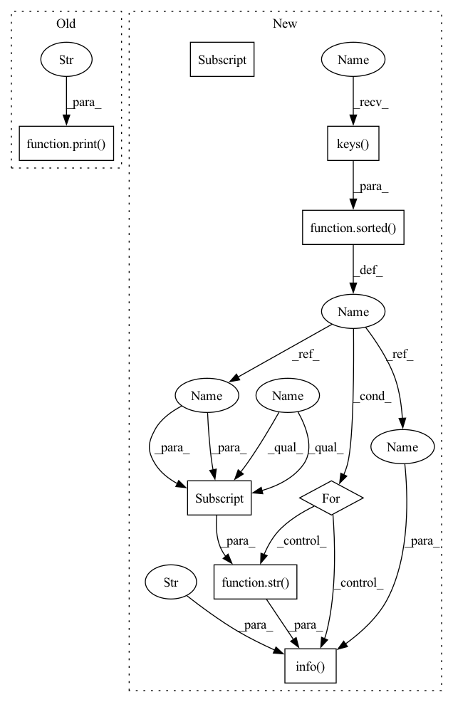

Pattern ID :41759

Before Change
cm = confusion_matrix(y_true,y_pred)
if show:
print("results",results)
print("y_pred",y_pred)
print("y_true",y_true)
print("confusion matrix",cm)
After Change
self.logger.info("%s", str(cm))
self.logger.info("***** Test results *****")
for key in sorted(test_results.keys()):
self.logger.info(" %s = %s", key, str(test_results[key]))
test_results["y_true"] = y_true
test_results["y_pred"] = y_pred
In pattern: SUPERPATTERN
Frequency: 3
Non-data size: 8
Instances
Fragment ID: 117059322
Project Name: thuiar/textoir
Commit Name: 203370e17d2a3452b90670171b60c44cb1500bcd
Time: 2021-08-03
Author: zhang-hl20@mails.tsinghua.edu.cn
File Name: open_intent_discovery/methods/semi_supervised/MCL_BERT/manager.py
M Class Name: MCLManager
N Class Name: MCLManager
M Method Name: test(3)
N Method Name: test(4)
M Parent Class:
N Parent Class:
M File Name: open_intent_discovery/methods/semi_supervised/MCL_BERT/manager.py
N File Name: open_intent_discovery/methods/semi_supervised/MCL_BERT/manager.py
M Start Line: 42
M End Line: 63
N Start Line: 133
N End Line: 148
'>
Before Change
y_true, y_pred, _ = self.get_preds_labels(args, data.eval_dataloader, self.model)
results = clustering_score(y_true, y_pred)
eval_score = results["NMI"]
print("eval_score",eval_score)
if eval_score >= self.best_eval_score:
best_model = copy.deepcopy(self.model)
wait = 0
After Change
y_true, y_pred = self.get_outputs(args, mode = "eval")
eval_score = clustering_score(y_true, y_pred)["NMI"]
eval_results = {
"train_loss": tr_loss,
"eval_score": eval_score,
"best_score": best_eval_score,
}
self.logger.info("***** Epoch: %s: Eval results *****", str(epoch + 1))
for key in sorted(eval_results.keys()):
self.logger.info(" %s = %s", key, str(eval_results[key]))
if eval_score > best_eval_score:
best_model = copy.deepcopy(self.model)
'>
Fragment ID: 117059320
Project Name: thuiar/textoir
Commit Name: 203370e17d2a3452b90670171b60c44cb1500bcd
Time: 2021-08-03
Author: zhang-hl20@mails.tsinghua.edu.cn
File Name: open_intent_discovery/methods/semi_supervised/MCL_BERT/manager.py
M Class Name: MCLManager
N Class Name: MCLManager
M Method Name: train(3)
N Method Name: train(3)
M Parent Class:
N Parent Class:
M File Name: open_intent_discovery/methods/semi_supervised/MCL_BERT/manager.py
N File Name: open_intent_discovery/methods/semi_supervised/MCL_BERT/manager.py
M Start Line: 76
M End Line: 111
N Start Line: 37
N End Line: 91
'>
Before Change
print("results",results)
print("y_pred",y_pred)
print("y_true",y_true)
print("confusion matrix",cm)
self.test_results = results
return y_pred, y_true, feats
After Change
def test(self, args, data):
y_true, y_pred = self.get_outputs(args, mode = "test")
test_results = clustering_score(y_true, y_pred)
cm = confusion_matrix(y_true, y_pred)
self.logger.info
self.logger.info("***** Test: Confusion Matrix *****")
self.logger.info("%s", str(cm))
self.logger.info("***** Test results *****")
for key in sorted(test_results.keys()):
self.logger.info(" %s = %s", key, str(test_results[key]))
test_results["y_true"] = y_true
test_results["y_pred"] = y_pred
'>
Fragment ID: 117059315
Project Name: thuiar/textoir
Commit Name: 203370e17d2a3452b90670171b60c44cb1500bcd
Time: 2021-08-03
Author: zhang-hl20@mails.tsinghua.edu.cn
File Name: open_intent_discovery/methods/semi_supervised/MCL_BERT/manager.py
M Class Name: MCLManager
N Class Name: MCLManager
M Method Name: test(3)
N Method Name: test(4)
M Parent Class:
N Parent Class:
M File Name: open_intent_discovery/methods/semi_supervised/MCL_BERT/manager.py
N File Name: open_intent_discovery/methods/semi_supervised/MCL_BERT/manager.py
M Start Line: 42
M End Line: 63
N Start Line: 133
N End Line: 148
'>
Before Change
print("train_loss",loss)
eval_score = self.evaluation(args, data)
print("eval_score", eval_score)
if eval_score >= self.best_eval_score:
best_model = copy.deepcopy(self.model)
wait = 0
After Change
eval_true, eval_pred = self.get_outputs(args, mode = "eval")
eval_score = round(accuracy_score(eval_true, eval_pred) * 100, 2)
eval_results = {
"train_loss": loss,
"eval_score": eval_score,
"best_score":best_eval_score,
}
self.logger.info("***** Epoch: %s: Eval results *****", str(epoch + 1))
for key in sorted(eval_results.keys()):
self.logger.info(" %s = %s", key, str(eval_results[key]))
if eval_score > best_eval_score:
best_model = copy.deepcopy(self.model)
'>
Fragment ID: 117059312
Project Name: thuiar/textoir
Commit Name: 4f0068bc25a3a26da045579505b16f4458389c60
Time: 2021-08-02
Author: zhang-hl20@mails.tsinghua.edu.cn
File Name: open_intent_discovery/methods/semi_supervised/KCL_BERT/pretrain.py
M Class Name: PretrainKCLManager
N Class Name: PretrainKCLManager
M Method Name: train(3)
N Method Name: train(3)
M Parent Class:
N Parent Class:
M File Name: open_intent_discovery/methods/semi_supervised/KCL_BERT/pretrain.py
N File Name: open_intent_discovery/methods/semi_supervised/KCL_BERT/pretrain.py
M Start Line: 51
M End Line: 81
N Start Line: 56
N End Line: 113